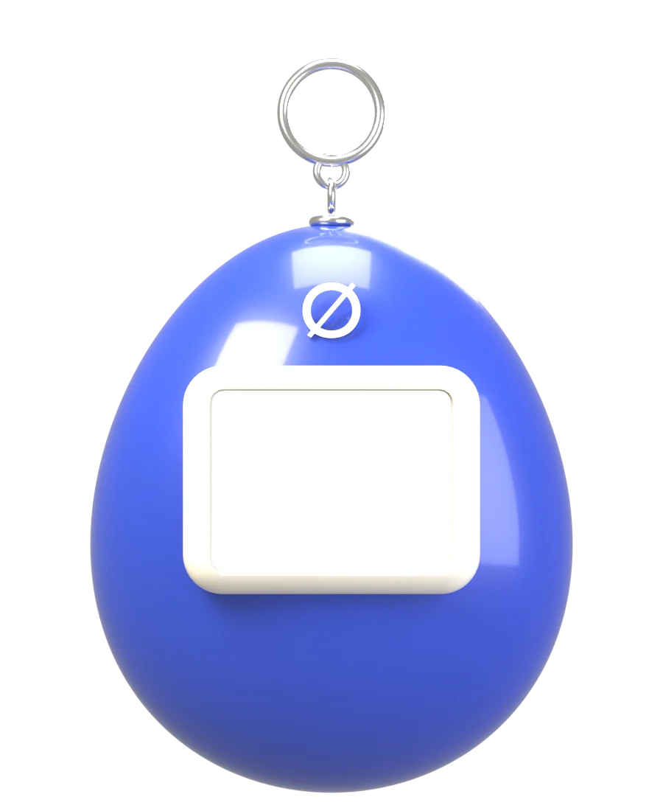
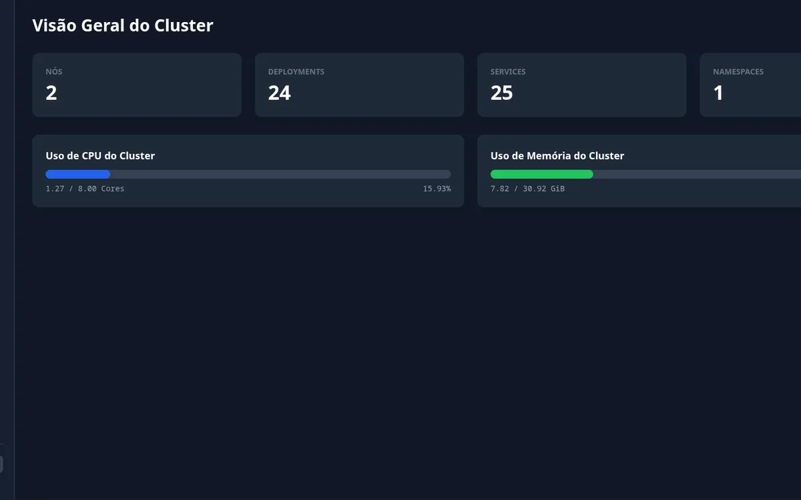
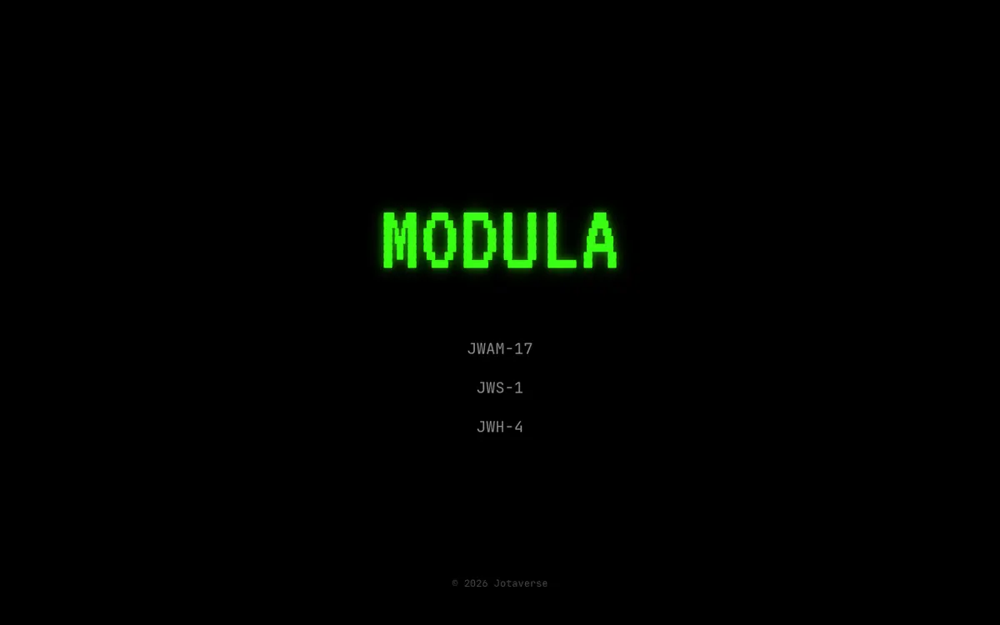
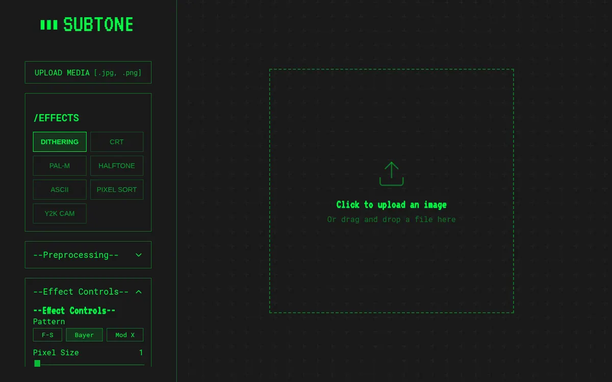
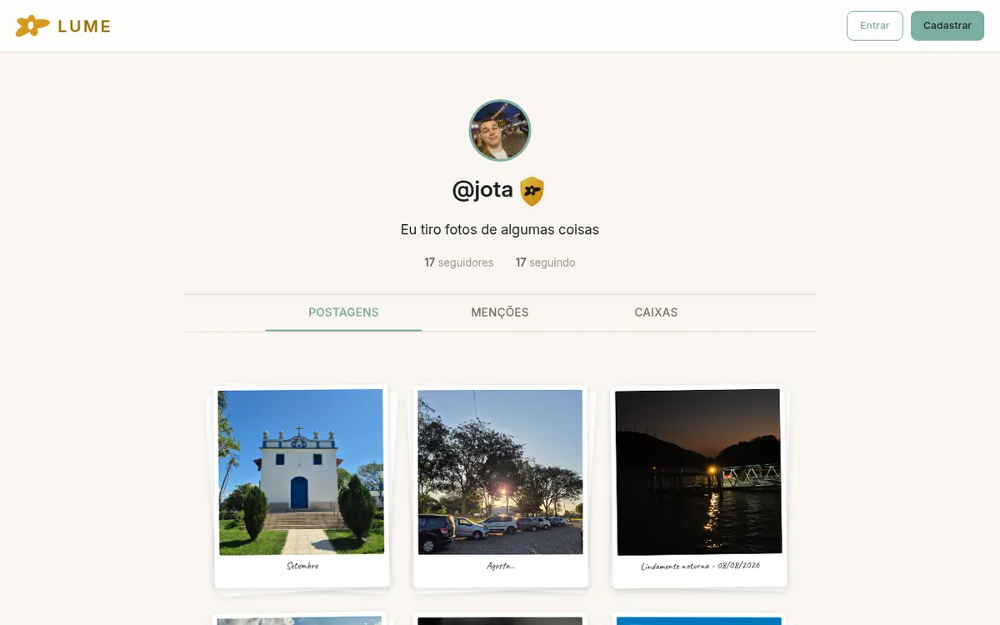
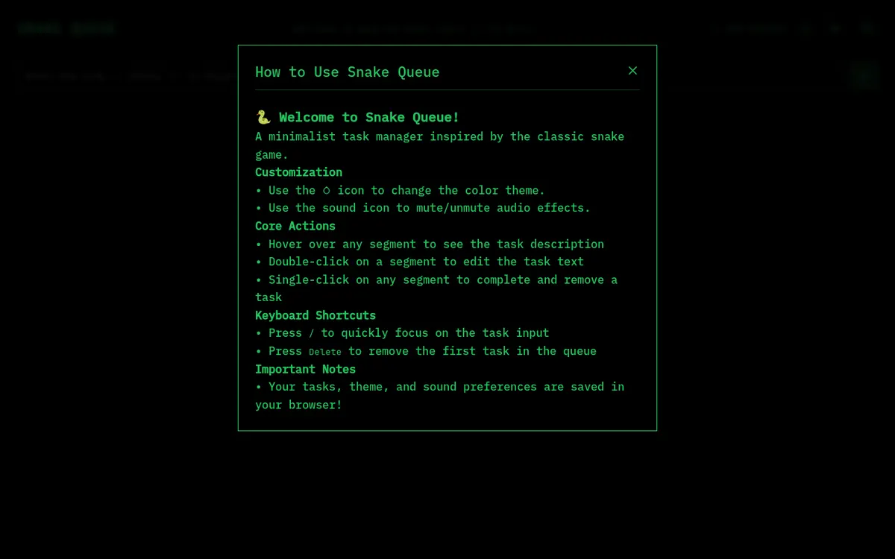
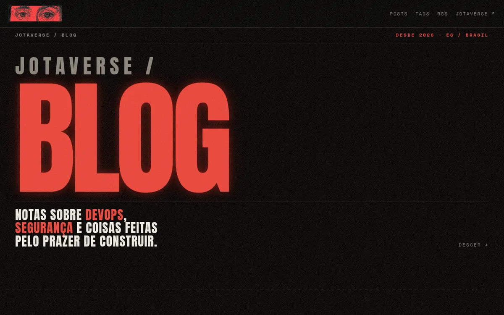

João Pimentel. Construo coisas
do zero,
por pura diversão.




Projetos
o que eu faço quando ninguém pede.

Um painel web que mostra o estado de um cluster Kubernetes em tempo real.
Três sintetizadores que rodam direto no navegador.
Um editor de imagem que aplica dither, halftone e outros efeitos retrô.
Uma rede social só para convidados, onde posto algumas fotos.
Uma lista de tarefas em que cada tarefa é um pedaço de uma cobra.
Onde escrevo sobre DevOps, segurança e homelab.Sobre
Sou o João. Lidero o time de DevOps do LEDS, um laboratório do Ifes em Serra, no Espírito Santo. No dia a dia isso quer dizer pipelines de CI/CD com GitHub Actions, Drone e Argo, clusters Kubernetes na AWS e nos nossos próprios servidores Proxmox, e zero trust entre os microsserviços.
Antes disso fui dev full cycle no mesmo laboratório. Escrevi a extensão em Langium por trás do Spark-LEds, que gera código de front e back a partir de uma DSL pequena, e um gateway de API com Ocelot.
O resto deste site eu fiz por diversão, no meu tempo livre.
- estudei
- Sistemas de Informação no Ifes. Antes, técnico em automação industrial no Cedtec.
- escrevo
- Notas sobre DevOps e segurança, no blog.
Manda um oi
clique no email pra copiar.